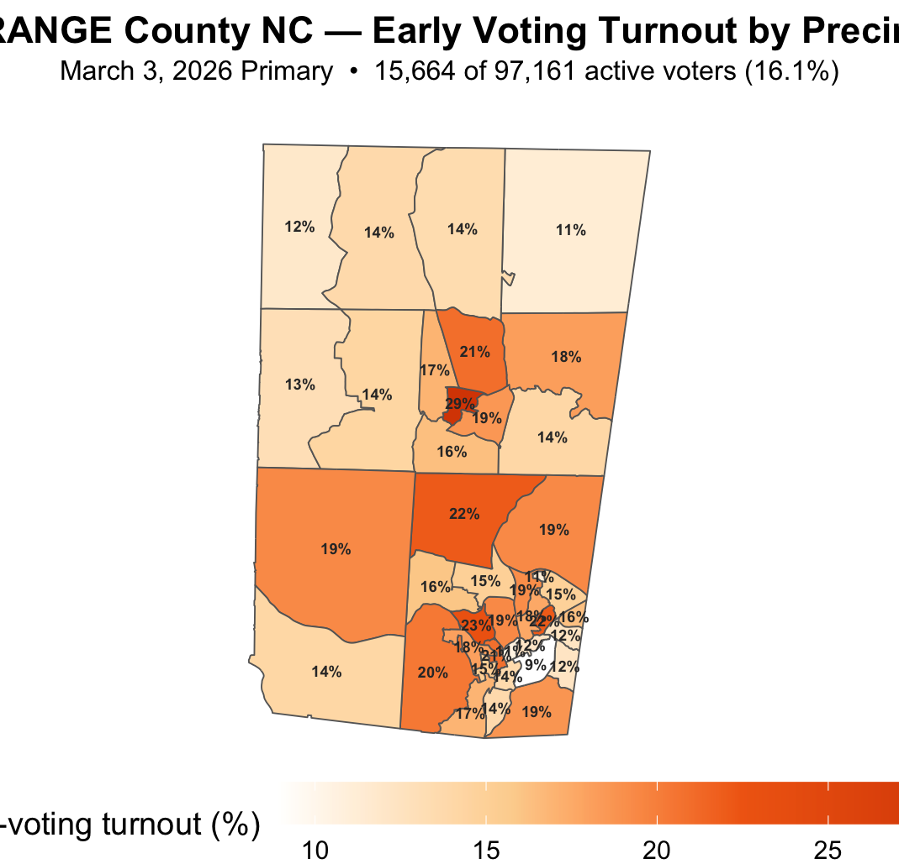

Orange County: Early Voting Turnout by Precinct
Precinct-level early voting turnout for the March 2026 primary election in Orange County, North Carolina. Turnout is calculated as the number of accepted early/one-stop ballots divided by active registered voters in each precinct.

Methodology
Numerator: distinct voters with accepted early/one-stop ballots in the
NCSBE absentee file (
abs_req_type = EARLY VOTING,
ballot_rtn_status = ACCEPTED). Denominator: active registered
voters from the county voter registration file (ncvoter68).
Precinct boundaries from NCSBE shapefile (Dec 2025).